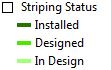

Importing Custom Symbology
In ArcMap, sometimes we will want to represent attributes (such as signage, parking and bikeways) with a standardized symbology that isn't available in the gallery of shapes or pane of colors provided. To find frequently used custom symbology navigate to the GIS folder in the Bike-Ped_Program file and select the folder named 'symbology' (\\PWAFILE2\Transportation\Bike-Ped_Program\GIS\Symbology). Here you will find layer files that can be easily dragged into or added to your map. Once added to your data frame, right click on the layer that you want to symbolize and select layer properties>symbology tab. Decide how you want to 'show' the attributes by navigating the left column of Features (categories,quantities,etc). Select the value field that you wish to represent and allow ArcMap to offer it's default symbology for whatever values you have chosen. Now click the 'Import' button in the top right corner of Layer Properties, make sure that "Import symbology definition from another layer in the map or from a layer file" is selected and then select the proper layer that you have dragged into the data frame as a template. Hit "OK" and ArcMap will assign the symbology from the template layer (the one you dragged into the data frame) to the layer that you are working with. Once you have imported the symbology from the template, you can remove it by right clicking on template layer in the data frame and selecting remove.
The following symbology can be found in the symbology folder (\\PWAFILE2\Transportation\Bike-Ped_Program\GIS\Symbology):
